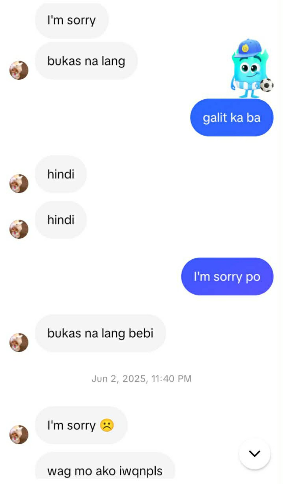

this moment was HORRIBLE and good at the same time. idk na kung ano reason bakit nag away tayo non pero sure naman na pang malupitan na reason yan (nagpataasan lang tayo ng pride). it was just like out other fights, pero this time felt diff talaga. that was the first time na parang iba yung way ng pag uusap natin, and honestly, natakot ako non tas bigla na lang pumasok sa isip ko na baka iwan mo ako dahil don. ewan ko ba, sinasaltik talaga ako madalas, pero that thought genuinely scared me. nagbr ako non and biglang pumasok sa isip ko na may possibility na baka ito na yung away na magiging reason bakit us mag b break. it was horrible fr kasi I hated the feeling na parang ang distant natin sa isa't isa kahit nag uusap naman tayo. but at the same time, it was good in a way. kasi after everything, I realized na we both grew because of it. we both saw things we needed to fix, and somehow, kahit anlala nung moment na yon, it made us understand each other more.